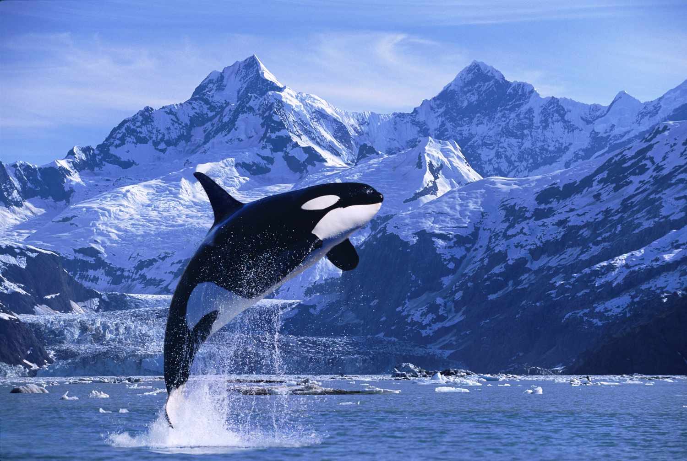
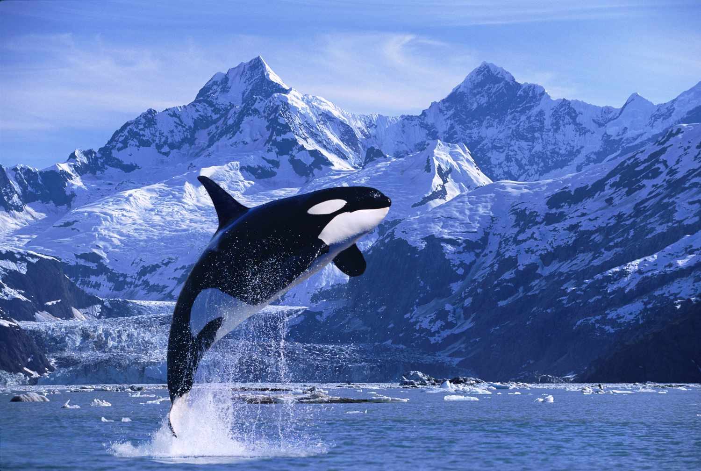

Whales, as apex predators, play a crucial role in marine ecosystem health. They contribute significantly to combating climate change by capturing an average of 33 tons of CO2 per great whale. Despite their imposing size and legendary status, six out of the 13 great whale species remain endangered or vulnerable, facing ongoing threats. Approximately 300,000 whales and dolphins fall victim to fisheries bycatch annually, and other dangers, including shipping incidents and habitat loss, persist. The warming of oceans and the reduction of sea ice in the Arctic and Antarctic pose additional challenges for whales. Changes in seawater temperature, winds, and ocean currents impact the habitats and food sources of these marine giants. As a result, whales may need to migrate further to find adequate feeding grounds, reducing their time for foraging. This shift in food availability due to climate fluctuations has already negatively affected the reproductive rates of the endangered North Atlantic right whale. All of these factors have harmed whales beyond belief throughout history, but with the proper conservatory measurements perhaps yet they may have a fighting chance to live.